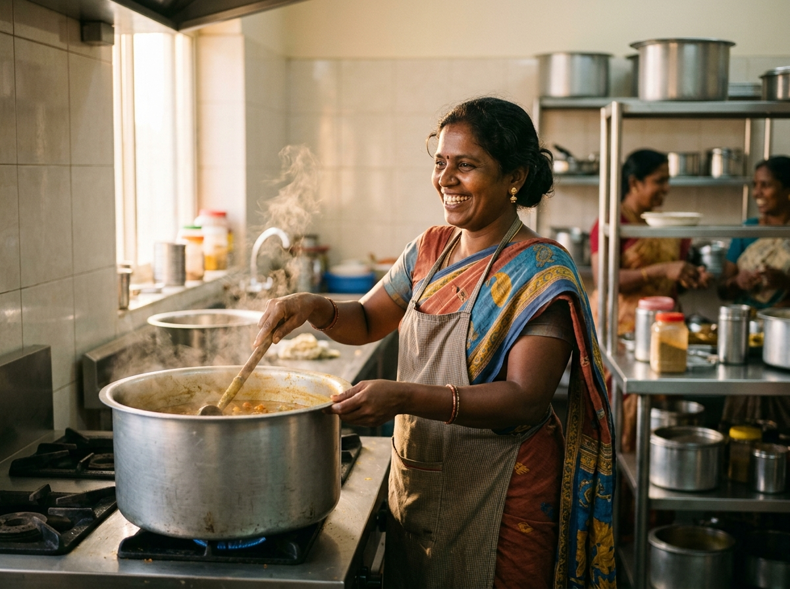

East Delhi Shelter
Meera’s Daily Community Kitchen
“When weddings finish at 11 PM, our volunteers deliver fresh shahi paneer and hot rotis by midnight. Children wake up to hot food instead of hungry tears.”
Meera has managed night shelter distribution in Laxmi Nagar for 4 years, ensuring over 120 elderly and migrant workers receive guaranteed evening nourishment.